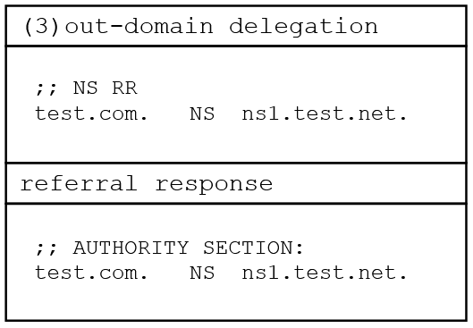

DNS笔记
Part 0 前言
记录文献中学习到的 DNS 相关基础知识。
Part 1 基本概念
DNS 解析参与方
客户端 DNS Client(stub resolver)
发送一个请求到recursive resolver，使其作为代理代为查询。
（递归）解析器 DNS Recursive resolver
也叫递归侧/resolver。
接收从 client 发来的 DNS query，从 Root Nameserver 开始逐级查询。
四种不同模式：
- 标准模式（recursive-only）：递归查询
- 转发器（forwarder）：此时 resolver 作为转发器，将 query 转发给上游 recursive resolver，使其代为查询
- 条件DNS（condiotional DNS, CDNS）：同时有 recursive 和 forwarder 两种模式，各有一个 DNS namespace 子空间，根据特定域名或客户端 IP 等进行选择性转发
- CDNS without fallback：没有备用选项，上游 resolver 可能不可用
- CDNS with fallback：当上游 resolver 不可用时，系统使用备用的 resolver 保证请求可以被解析
名称服务器 DNS Nameserver
也叫权威侧/Nameserver/Server。
ROOT
根服务器，返回参考应答（ref-response），这是一种包含进一步的指向信息，而不包含所需的 IP 地址的响应。
TLD
Top-Level Domain，如 .com, .net 等，返回 ref-response
SLD
Second-Level Domain，如 cnn.com 等，（可能）返回权威应答（auth-response），包含最终 IP 地址的权威响应。
资源记录 RR
RR, resource record，定义为五元组：
- $owner$：（RR）所有者，表明该 RR 属于哪个域名
- $type$：类型，表明该 RR 的类型，常见的如 A（IPv4地址记录）、MX、CNAME（域名别名）、NS（名称服务器）
- $Class$：类别，表明 RR 的上下文，IN 表示 Internet 最常见
- $TTL$：Time to Live，表明 RR 可以在 DNS 缓存中存在的时间，单位为秒
- $RDATA$：数据，类型取决于 $type$
信任等级
DNS 软件通过 RR 的信任等级来决定是否返回给用户、保存到内存或更新已有数据。
示例
[Usenix Security ‘24]{CAMP}: Compositional Amplification Attacks against {DNS}
NS, CNAME, DNAME, SOA, A, AAAA
NS(Name Server)
NS记录，指定一个域名的权威 DNS 服务器
CNAME(Canonical Name)
别名记录，将一个域名（别名）永久重定向到另一个域名（规范名称）。
一个域名只应该有一个 CNAME[USENIX ‘24 CAMP]。
DNAME(Delegation Name)
委托记录，实现域名的递归重定向，将一个域名的整个子域重定向到另一个域名，如 sub.example.com 有一个 DNAME 记录指向 sub.newdomain.com，则任何 sub.example.com 或其子域（如sub.example.com/path）的查询会重定向到 sub.newdomain.com或相应的子域（如sub.newdomain.com/path）
一个域名只应该有一个 DNAME[USENIX ‘24 CAMP]。
RRSIG
响应
引用响应 Ref-response
Ref-response, referral response，由 NS 向 resolver 返回的包含指示下一步向谁发送 query 的响应。
权威响应 Auth-response
Auth-response, authoritative response, 由 NS 向 resolver 返回的包含最终结果（IP）的响应，解析结束。
bailiwick
in-bailiwick
out-of-bailiwick
Part 2 解析流程
[Usenix Security ‘24]{ResolverFuzz}: Automated Discovery of {DNS} Resolver Vulnerabilities with {Query-Response} Fuzzing
- Client 发起一个 Client-query $Q$
- Recursive resolver 收到 $Q$，并作为代理，向 ROOT Nameserver 发送 Resolver-query $Q_R$
- ROOT Nameserver 收到 $Q_R$，其根区域文件（root zone）中只包含 TLD 权威服务器的地址，因此向 Recursive resolver 返回一个 ref-response $R_R$，包含 TLD 的 NS 记录以及其 IP 地址
- Recursive resolver 收到 $R_R$ ，向 TLD 发送一个 $Q_R$
- TLD Nameserver 收到 $Q_R$，其 zone file 包含 SLD 的 NS 记录机器 IP 地址，将 $R_R$ 返回
- Recursive resolver 收到 $R_R$，向 SLD 发送一个 $Q_R$
- SLD Nameserver 收到 $Q_R$，其为被查询域名的权威名称服务器，包含具体的 NS 和 对应的 IP 地址，因此返回的是权威响应 $R_A$
- Recursive resolver 收到 $R_A$，包含了域名对应的 IP 地址，递归查询结束，将结果 $R$ 返回给 Client
Part 3 胶水记录 Glue Record
胶水记录是 DNS zone 中的一种 A 记录，在 RFC 1034 中记录。
Part 4 攻击
反射攻击 Reflective attack
攻击者伪造目标 IP 地址，发送信息请求，使得服务器响应请求并将答复发送给目标 IP 地址。
放大攻击 Amplification attack
利用脆弱服务对攻击者发送的请求做出大量回复，引起比原始请求大得多的响应。
Part 5 权威侧垂直结构

[Usenix Security ‘24]Rethinking the Security Threats of Stale DNS Glue Records
域名空间 Domain name space 是树状结构，其中的每个节点 node 或叶子 leaf 都和一个资源集相关联，比其高的区域 zone 是父区域 parent zone，比其低的区域是子区域 child zone。
- 最顶层：根区域 root zone
. - Top-Level Domains：TLD，如
.com、.net - Second-Level Domains：SLD，如
exam.com、foo.com
一个 DNS zone 只包含其子域的信息。如图所示，对于请求②，根返回一个 ref-response③，告知 resolver 关于 .com 的权威 nameserver 的信息；对于请求④，.com nameserver 返回一个 ref-response⑤，告知关于 exam.com 的权威 nameserver 的信息；对于请求⑥，exam.com nameserver 最终返回了 exam.com 的资源记录。
Part 6 域名授权（委托） Domain delegation
域名管理者通过配置委托 NS 记录和胶水记录（如需）来将其域名委托给特定的服务器。根据 NS 记录和域名的关系，共有三种授权类型：in-domain, sibling-domain 和 out-domain。
[Usenix Security ‘24]Rethinking the Security Threats of Stale DNS Glue Records
域内委托 in-domain
NS 记录配置了包含在被委托域名内的 nameserver，这种情况下胶水记录是必需的。
图中 test.com 的 NS 记录是 ns1.test.com，在 test.com 中，需要胶水记录打破循环。
兄弟域委托 sibling-domain
NS 记录没有配置在被委托域名下，但是在另一个同一父域委派的区域中，胶水记录不是必需的。
图中 test.com 的 NS 记录是 ns1.foo.com，不在 test.com 中，而是在 foo.com 中，而 foo.com 的父域是 .com，和 test.com 是同一父域。尽管这种情况下胶水记录不是必需的，resolver 返回的 ref-response 一般也包含该记录。
域外委托 out-domain
NS 记录配置的 nameserver 跨越了 TLD，胶水记录不是必需的。

图中 test.com 的 NS 记录是 ns1.test.net，其 TLD 是 .net，和 test.com 的 TLD .com 不是一个。对于这种情况，resolver 返回的 ref-response 不应该包含胶水记录，应该重新对 ns1.test.net 发起主动解析。
Part 7 DNS 机制
超时重传 timeout
DNS 经典依赖的协议是 UDP，这是一种无状态的协议，即本身缺少送达承诺或者重传机制。DNS 为了提高可用性采取了 timeout 机制，确保 DNS 解析功能。
[S&P ‘24]DNSBomb: A New Practical-and-Powerful Pulsing DoS Attack Exploiting DNS Queries-and-Responses
4-a：timeout 机制包括请求和响应两种。
4-b：请求 timeout 会指定一个最长的 resolver 对 DNS server 等待响应的时间，在这之后会认为这个请求超时。当 resolver 向 DNS server 发送一个请求时，会设定一个计时器 timer，BIND 默认为 800ms。当超时后还没有收到响应时，resolver 会使用一个更新的计时器重发请求（可能向不同的 nameserver），或者终止这个请求。
- 4-c：为了避免无限重试，一般会设置重试次数上限，对 Unbound 是11。当超时且没有得到响应时，resolver 会返回一个 ServFail 错误。
DNS 请求聚合
将多个
[S&P ‘24]DNSBomb: A New Practical-and-Powerful Pulsing DoS Attack Exploiting DNS Queries-and-Responses
- 5-a：没有 DNS 聚合机制
- 对每个 client 发来的请求，resolver 都向权威 nameserver 查询
- 5-b：有 DNS 聚合机制
- 对每个 client 发来的请求，如果域名相同，那么仅向权威 nameserver 查询 1 次
Part 8 IP 分片
Part 9 Resolver 分类
开放解析器 open resolver
分布在互联网中，任何地址都可以向其发送 DNS 请求
服务有限网络的 resolver
分布在家中或者企业网络中，攻击者可以通过收集大规模网络测量平台的优势点 vantage point 或者使用家用代理网络来向其生成 DNS 请求
客户端解析器 stub resolver
客户端解析器，不直接查询 DNS 请求，而是将其发给本地的递归解析器执行请求
攻击者可以通过嵌入攻击者控制域名的在线广告或垃圾邮件来引导客户端发起 DNS 查询请求
Part 10 DNSSEC
参考资料：DNSSEC？禁止套娃！-知乎
DNSSEC 保证了 DNS 中的源真实性（origin authenticity）和数据完整性（data integrity）。
- 使用私钥对 RRsets 签名以验证权威性和完整性
- 签名在 DNS 中发布，即为 RRSIG
- DNSKEY 公钥也发布从而使得 RRSIG 可以被验证
- 子区域也使用其私钥对其记录进行签名
- 父区域对子区域的 DS 记录签名来证明权威性
权威侧 server
- 为 zone 签名
- 向请求回答所需的记录
- 同事发送和记录相关联的数字签名
递归侧 resolver 验证
- 验证来自 server 的响应
- 对无效的结果返回 SERVFAIL
DNSKEY
一种资源记录，包含区域的公钥，使用公钥密码学来签发和验证 RRsets 。每个区域会使用两种 DNSKEY 来为 DNS 记录签名
ZSK, Zone-Signing-Key
- 为区域中的 RRSets 签名
- 被 KSK 签名
- 使用 flag 256
ZSK 用于为区域中的（其他，DNSKEY之外的）记录签名，使用 KSK 进行身份验证。
KSK, Key-Signing-Key
- 为 ZSK 签名
- 指向父区域
- 为 DNSKEY 记录生成 RRSIG
RRSIG
RRSIG, Resource Record SIGnature
- RRSIG和记录集合（RRset）相关联，包括 name, class, record type。
- 对特定 name 的给定 type 的所有记录的签名
- 如，对 example.org 的 A 记录的签名形成一个 RRSIG：example.org A RRSIG
- RRSIG 是由一个和 DNSKEY 中公钥对应的私钥创造的
DS
DS, Delegation Signer
一种资源记录，本质上是 DNSKEY 的哈希，这些记录被上传到父区域，从而建立了到达根区域的信任链。父区域的 DS 记录和其他记录一样都是使用 RRSIG 验证的。
Part 11 Bind
Bind9是流行的DNS软件，可以用作递归解析器或者权威服务器。
从源码安装特定版本Bind
Docker
使用 ./named -c /etc/bind/name.conf -g来调试运行bind
设置A记录
下述以twitter.com为例
确认区域文件位置
- 在
/etc/bind/named.conf中查看区域文件配置 - （一般）在
/etc/bind/named.conf.local中查看区域文件具体位置，一般是/etc/bind/named.conf.zones - 在
/etc/bind/named.conf.zones中查看域名区域文件位置，一般是/etc/bind/zones/twitter.com.
- 在
编辑区域文件
编辑
/etc/bind/zones/twitter.com.添加A记录
1
@ A 10.161.0.7
重启bind9生效
1
/etc/init.d/named restart
正确的
twitter.com区域文件示例1
2
3
4
5
6
7$TTL 300
$ORIGIN twitter.com.
@ SOA ns1.twitter.com. admin.twitter.com. 3418864001 900 900 1800 60
;ns1.twitter.com. A 10.161.0.71
@ NS ns1.twitter.com.
ns1 A 10.161.0.71
@ A 10.161.0.71
Part 12 Unbound
Unbound一般用作递归解析器，不用做权威服务器。
设置root.hints
确认
root.hints位置- 可能在
/etc/unbound/root.hints
- 可能在
确认内容
1
2
3
4
5. 3600 IN NS ns1.
ns1. 3600 IN A 10.171.0.71
;ns1. A 10.171.0.71
;. NS ns1.前两行是正确的，后两行是错误的
配置关闭DNSSEC
在/etc/unbound/unbound.conf中添加字段：
1 | val-permissive-mode: yes |
Part 13 PowerDNS
Part 14 dig
dig +trace example.com
可以看响应路径
This is copyright.